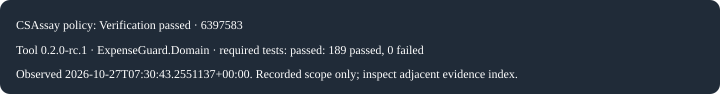

CSharpAssay 0.2.0-rc.1 · native development build
Understand the finding.
Inspect the evidence.
Functional C# for AI-assisted development. Explore a small code change, follow an ExpenseGuard decision, then reproduce the checks locally.
AI advises. The domain decides. Evidence states exactly what ran.
Check the lane before trying it
Current source pins SDK 11.0.100-rc.2.26504.105, net11.0 and LangVersion=preview, with roll-forward disabled. This is the preserved RC2 qualification lane, not a claim of current vendor support or final-SDK qualification. Microsoft’s newer release status must be reviewed separately.
The native development packages are prepared from a local feed. Historical NuGet 0.1.x installs are a different release. No account, email or model key is needed to explore this page.
01 / Explore a rule
A small shape. A clear explanation.
Seven admitted rules are shown first. The compiler case and CSAU0004 prototype are separate observations; prototype advice is not an admitted blocker.
Loading recorded evidence…
No code is sent anywhere or executed. Your edit stays in this page and cannot inherit a recorded result.
Recorded result
Recorded evidence and original receipt digest
Source, tool and policy identities
Practical explanation, examples and limits
02 / Follow an ExpenseGuard decision
Advice has no approval authority.
The default advisor deliberately suggests approval. It is an offline simulation, not a live model attempting fraud. The domain evaluates actual facts; payment effects stay simulated.
ExpenseGuard workbench, source and local setup ↗
In a local workbench, choose Recorded guide. The guide does not create claims, change identities or delete data. Normal API authorization remains required.
03 / Run verification locally
Reproduce it with the actual tool.
Install the exact repository SDK first. Follow the canonical engine local-feed guide rather than installing an unpublished native version from NuGet. Dependency restore can require network access; the verifier itself does not need an AI provider.
- Prepare and install matching local analyzer/tool packages.
- From the Playground root, prepare qualified packages from the matching clean qualified engine checkout.
- Run the actual ExpenseGuard gate with Docker/PostgreSQL available. Missing database execution is a failure, not a skipped success.
./eng/prepare-assay.sh ../CSharpAssay --qualified-bootstrap-locks ./eng/tooling packed-assay -- explain CSAI0001 export ASSAY_RUNNER="$PWD/../CSharpAssay/src/CsAssay.Runner/bin/Release/net11.0/cs-assay.dll" ./eng/run-expenseguard.sh --output "$PWD/evidence/generated/expenseguard/first-run"
Use a fresh disposable checkout/output directory. The engine checkout must contain its completed qualification; preparation records local consumer-lock changes. Artifact paths include qualification.json, verify.json, verify.sarif, verify.html and verify.md.
check is analysis only. doctor checks prerequisites, not the application. An authoritative verify result applies only to recorded scope and evidence. Zero findings with missing evidence is incomplete.
A receipt for one recorded source.
This badge describes the historical source named inside its evidence index. It does not track current main or verify your edits.

Recorded source and evidence index · Redacted receipt derivative. The derivative binds its retained original by digest; hashes are not signatures or security certification.
Historical material
Keep old evidence in its original lane.
Historical 0.1.1 GoF crosswalk site · 0.1.1 notes · Historical public 0.1.2 package
Classic/advisory crosswalk IDs CSAF0001, CSAD0002 and CSAI0003 remain contextual guidance. Historical compatibility/toolchain records do not qualify a new native build.